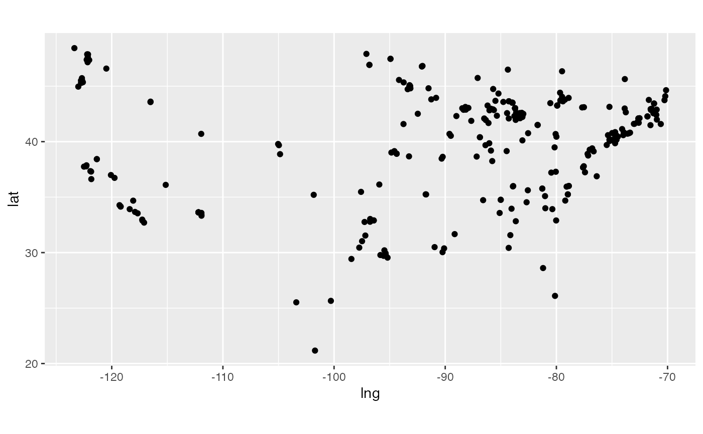

Get a dataframe with records from TBA
get_records.RdThe Blue Alliance API v3 is specified at https://www.thebluealliance.com/apidocs/v3.
The function get_records takes a call to any of the TBA lists under list and returns, if possible, all records in a data frame.
In case the results can not be converted to a data frame, they are returned as list.
Examples
events <- get_records("events/2024")
events[grep("Corn", events$name),] # yep, there is an event with 'Corn' in it
#> # A tibble: 1 × 30
#> address city country district$abbreviation division_keys end_date event_code
#> <chr> <chr> <chr> <chr> <list> <chr> <chr>
#> 1 3650 Wo… West… USA NA <chr [0]> 2024-09… iawes
#> # ℹ 26 more variables: district$display_name <chr>, $key <chr>, $year <int>,
#> # event_type <int>, event_type_string <chr>, first_event_code <chr>,
#> # first_event_id <chr>, gmaps_place_id <chr>, gmaps_url <chr>, key <chr>,
#> # lat <dbl>, lng <dbl>, location_name <chr>, name <chr>,
#> # parent_event_key <chr>, playoff_type <int>, playoff_type_string <chr>,
#> # postal_code <chr>, short_name <chr>, start_date <chr>, state_prov <chr>,
#> # timezone <chr>, webcasts <list>, website <chr>, week <int>, year <int>
table(events$state_prov)
#>
#> AL AR AZ BC
#> 1 2 10 1
#> Beijing CA CO CT
#> 1 20 3 4
#> Coah. DF FL GA
#> 1 1 3 6
#> Gto. HI Haifa District IA
#> 1 1 6 2
#> ID IL IN Jerusalem District
#> 2 4 7 1
#> KS KY LA MA
#> 1 1 3 11
#> MD ME MI MN
#> 3 3 47 13
#> MO MS MT N.L.
#> 6 1 1 1
#> NC ND NH NJ
#> 10 3 8 8
#> NSW NV NY OH
#> 2 1 11 5
#> OK ON OR PA
#> 2 16 7 7
#> QC RI SC SON
#> 1 1 4 1
#> TN TX Taipei City UT
#> 2 27 1 1
#> VA VIC WA WI
#> 9 1 10 8
#> WV İstanbul
#> 1 7
# now draw a map of all events in North America
require(ggplot2)
#> Loading required package: ggplot2
require(dplyr)
events %>% slice(grep("America", timezone)) %>%
filter(lat > 20) %>% # sorry, South America
ggplot(aes(x = lng, y = lat)) + geom_point() +
coord_equal()
